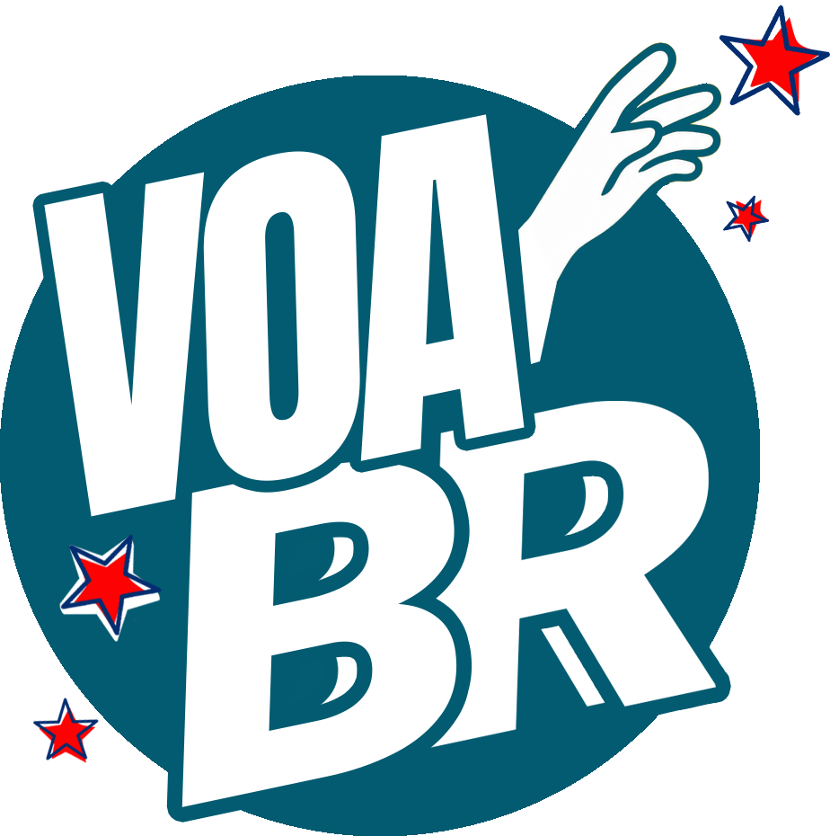

@voabroficialDe olho nas urnas, a desinformação já começou a circular. Mas o VoaBR também está aqui, pra organizar quem quer que a verdade chegue primeiro.
O VoaBR é uma mobilização digital para as eleições de 2026. Trabalhamos para fortalecer o debate político, desmontar mentiras antes que elas se espalhem e ajudar as pessoas a decidir seu voto com informação de verdade.
Queremos fazer mais do que corrigir boato mentiroso depois que ele já rodou o Brasil inteiro. Nosso objetivo é agir antes, fomentar visões críticas e mobilizar por um Brasil democrático a partir da formação política e do debate justo.
Acreditamos num projeto de país democrático e progressista. Sabemos que fortalecer esse caminho passa por um debate político cuidadoso, verdadeiro e acessível a todo mundo — não só a quem já está convencido.
Por isso organizamos a mobilização em cinco frentes que tocam a vida concreta do povo brasileiro. Em cada uma delas vemos conquistas tomadas do povo brasileiro pela extrema-direita — mas sabemos que essas agendas também inspiram, e que com debate qualificado e democracia fortalecida podemos recuperar o que foi perdido e garantir ainda mais vitórias.
Saúde, proteção e bem-estar de crianças, adolescentes, mulheres e famílias: a vacina do SUS, o Bolsa Família, a merenda escolar, a proteção contra a violência. O cuidado é um trabalho que sustenta a sociedade inteira.
Em jogo: o cuidado como direito essencial e como trabalho reconhecido.Nenhuma criança e nenhum jovem é descartável. Ensino básico, técnico e superior como caminhos reais para o trabalho decente. Professores e pesquisadores valorizados, lazer e cultura como pilares da democracia.
Em jogo: aprendizado, oportunidade concreta e o futuro do trabalho.O Brasil é dono do próprio destino. Quem decide sobre a nossa economia, a nossa segurança e a nossa vida. Enfrentar o crime organizado e a tutela estrangeira, sem punir quem o crime já vitimou.
Em jogo: o direito de viver sem medo e sem tutela de fora.O trabalho deve ser vetor de uma vida melhor, não só de sobrevivência: o fim da escala 6x1, os direitos de quem é plataformizado, as bets como questão de saúde pública, e uma divisão justa de tempo e renda.
Em jogo: tempo de viver melhor e corrigir a desigualdade.O impacto da mudança climática nas nossas vidas, mobilidade e infraestrutura, comida saudável, água limpa, energia, a defesa dos nossos biomas e dos povos originários — sem entregar a natureza para exploração das transnacionais.
Em jogo: a terra, a água e os biomas que sustentam a vida de verdade.Se você também acredita na prioridade dessas agendas e no poder do debate democrático, vem com a gente!
Onde estamos: pré-campanha — o momento de construir base de conhecimento antes da corrida eleitoral esquentar. Fique de olho nas datas.